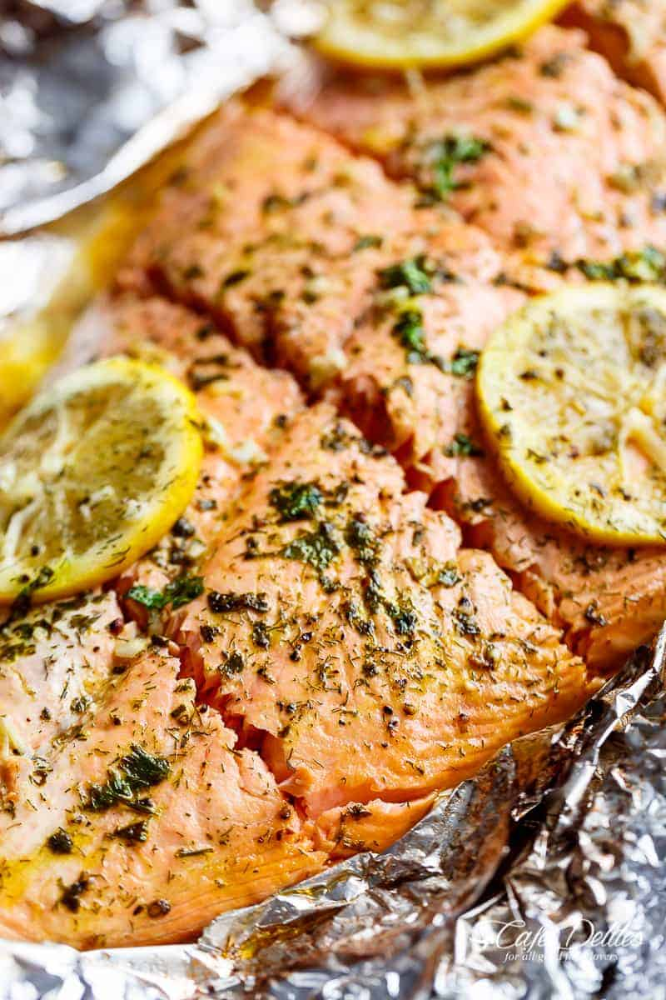

Butter Garlic Lemon Salmon

Description
- Calories: 310 kcal
- Cooking Time: 25 minutes
- Serving Amount: 8 people
A quick recipe that takes less than half an hour! It is the perfect balance between sweet and savory, and only takes a minimum of five main ingredients. The clean up is fast as well.
Ingredients
- 1/4 cup butter
- 1/3 cup honey
- 4 large cloves garlic, crushed
- 2 tablespoons fresh lemon juice
- 2 1/2 pound side of salmon
- sea salt, to taste
- cracked pepper, to taste
- lemon slices to serve
- 2 tablespoons fresh chopped parsley
Steps
- Position a rack in the middle of the oven. Preheat oven to 375 degrees Fahrenheit.
- Line a baking tray or sheet with a large piece of foil, big enough to fold over and seal to create a packet of the salmon.
- In a small saucepan, melt the butter over low-medium heat.
- Add the honey, garlic, and lemon, and whisk until the honey has melted through the butter and the mixture is well combined.
- Place salmon onto lined baking tray or sheet.
- Pour the butter-honey mixture over the salmon, and using a pastry brush or spoon, spread evenly over the salmon. Sprinkle a good amount of salt and cracked pepper.
- Fold the sides of the foil over the salmon to cover and completely seal the packet closed so the butter does not leak.
- Bake until cooked through, about 15-18 minutes, depending on the thcikness of fish and preference of doneness.
- Open the foil, being careful of any escaping steam, and garnish with parsley. Serve immediately with lemon slices.